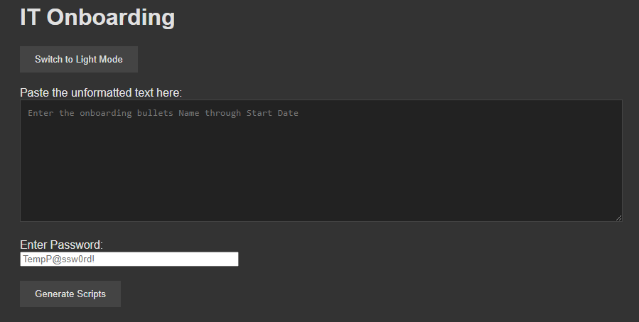

Onboarding Site
This site was created to be used at my place of work currently, I was the solo developer of this site while I was an intern. It takes in a standard set of information provided from HR, when provided as password, select Generate Scripts. This will run a JS Script on device and fill out two sets of information. The first one is to be pasted into an elevated PowerShell terminal on our main Active Directory server. Once pasted it will created and commit a new entity into our indentity database. The second part is a form that we email to our depot management company AuditMacs. Once we send them this information they will format and ship the proper device to the new hire.
SQL

I worked on this in a course during my time at FSU, I was working on this alone following instructions given by my instructor. The tasks involved querying employee and assignment details based on various conditions, such as filtering employees by city, checking for the existence of assignments with specific names, and aggregating work hours for part-time employees. The purpose of this project was to demonstrate data retrieval techniques using SQL and to solve real-world data analysis scenarios efficiently. Through this project, I developed several technical skills, including the ability to write efficient SQL queries, use relational database concepts effectively, and leverage advanced clauses such as EXISTS and GROUP BY for structured data analysis.
Java

During my time at FSU I developed skills regarding Java. This project involved creating a Java program to demonstrate the use of conditional statements and looping structures, specifically focusing on the continue statement within a while loop. One of the main challenges of this project was ensuring the proper implementation of the continue statement to bypass the addition of the specified numbers without disrupting the overall summation logic. Additionally, I developed soft skills such as problem-solving, attention to detail, and logical thinking, which were critical for debugging and optimizing the program. This experience has prepared me for future challenges by enhancing my ability to design, implement, and troubleshoot code effectively, while also emphasizing the importance of clarity and precision in programming logic.
Personas Development

The objective was to create a realistic representation of the target audience to guide the design and content strategy for the website. In this project, I was responsible for researching and synthesizing user needs, behaviors, and pain points into a clear and visually appealing persona. This required integrating qualitative insights, such as user frustrations with accessing event calendars and mobile usability issues, with demographic and psychographic information. This project also highlighted my ability to think strategically about user-centered design and demonstrated my proficiency in creating tools to improve user experience.